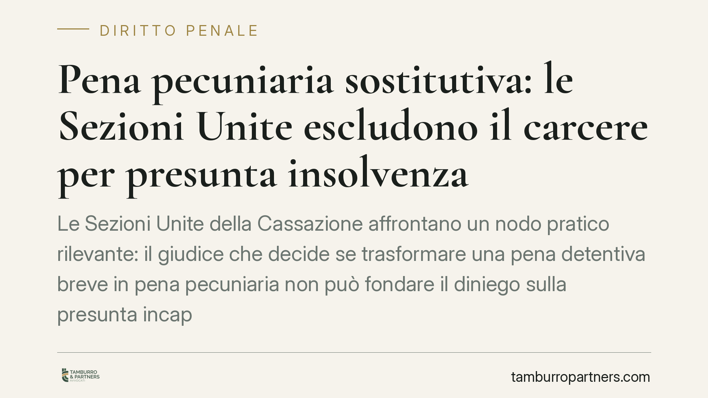

Pena pecuniaria sostitutiva: le Sezioni Unite escludono il carcere per presunta insolvenza
Le Sezioni Unite della Cassazione affrontano un nodo pratico rilevante: il giudice che decide se trasformare una pena detentiva breve in pena pecuniaria non può fondare il diniego sulla presunta incapacità del condannato di pagare. Una lettura che riequilibra il rapporto tra accesso alla sanzione sostitutiva e condizioni economiche, con effetti diretti sulle strategie difensive.

Il principio affermato dalle Sezioni Unite
La questione è tecnica, ma le conseguenze sono concrete. La pena pecuniaria sostitutiva è lo strumento, introdotto in forma ampliata dalla riforma Cartabia (d.lgs. 150/2022), che consente al giudice di cognizione di sostituire una pena detentiva breve con una somma di denaro.
Il problema sollevato riguardava un passaggio delicato: il giudice può rifiutare la sostituzione perché ritiene che il condannato, essendo privo di mezzi, non riuscirà a pagare? Le Sezioni Unite rispondono di no. La valutazione sull'accesso alla sanzione sostitutiva deve basarsi sui criteri di legge — gravità del fatto e personalità del reo — non su una prognosi di insolvenza.
> Nota redazionale: la pronuncia delle Sezioni Unite va citata con i suoi estremi identificativi (numero, anno e data di deposito) prima della pubblicazione definitiva. Il dato è in corso di verifica sulla fonte ufficiale e deve essere inserito a cura dello studio.
Inquadramento normativo
Il riferimento centrale è l'art. 53 della L. 689/1981, come riformato dalla Cartabia, che disciplina la sostituzione della pena detentiva con la pena pecuniaria. Nella formulazione post-riforma il limite edittale per accedere alla sola pena pecuniaria sostitutiva è fissato in un anno di pena inflitta: si tratta di un dato da verificare puntualmente sul testo vigente, perché la materia è stata ridisegnata dal d.lgs. 150/2022 e il controllo sulla versione aggiornata della norma è imprescindibile.
Accanto alla pena pecuniaria, il sistema prevede altre sanzioni sostitutive — semilibertà, detenzione domiciliare sostitutiva, lavoro di pubblica utilità sostitutivo — con soglie edittali più alte. I relativi limiti (previsti dagli articoli della L. 689/1981 nella versione post-Cartabia) vanno anch'essi verificati sul testo vigente e non riportati a memoria.
Il criterio di scelta tra le diverse sanzioni sostitutive resta ancorato all'art. 58 L. 689/1981, che rinvia ai parametri dell'art. 133 c.p.: gravità del reato e capacità a delinquere. È proprio questo l'asse su cui le Sezioni Unite riportano la decisione, sottraendola a valutazioni economiche improprie.
Perché la distinzione tra accesso ed esecuzione è decisiva
Il cuore del ragionamento sta nella separazione tra due momenti. La fase di accesso è quella in cui il giudice decide se la pena detentiva può essere sostituita: qui contano gravità e personalità. La fase di esecuzione è quella, successiva, in cui si verifica se il condannato paga effettivamente: eventuali difficoltà economiche trovano risposta nella rateizzazione, nella conversione o negli altri rimedi previsti dall'ordinamento.
Confondere i due piani produce un paradosso rispetto al principio di eguaglianza (art. 3 Cost.): il benestante accederebbe alla pena pecuniaria perché solvibile, il povero resterebbe in carcere proprio perché povero. Un esito che punisce la condizione economica anziché il fatto, e che le Sezioni Unite escludono.
Implicazioni pratiche
Per chi è imputato di reati con pena detentiva contenuta, la decisione amplia concretamente lo spazio della pena pecuniaria sostitutiva. Il difensore può chiederla senza che la precarietà economica dell'assistito costituisca, di per sé, un ostacolo al suo accoglimento.
Sul versante opposto, resta fermo che il pagamento va comunque assicurato nella fase esecutiva: l'accesso alla sanzione non cancella l'obbligo, ma lo colloca nella sede corretta, dove operano gli strumenti di gradualità.
Cosa fare in concreto
- Verificate la soglia di pena: controllate che la pena inflitta rientri nei limiti edittali previsti dalla L. 689/1981 post-Cartabia per la sanzione sostitutiva richiesta.
- Formulate la richiesta nella fase di cognizione: la sostituzione va sollecitata al giudice che pronuncia la condanna, con istanza motivata sui criteri dell'art. 133 c.p.
- Separate i piani nell'argomentazione: non introducete la capacità economica come requisito di accesso; collocatela, se del caso, nella fase esecutiva.
- Documentate la situazione patrimoniale in vista della rateizzazione, non per sostenere il diniego.
- Richiamate il principio delle Sezioni Unite una volta acquisiti gli estremi esatti della pronuncia, per rafforzare l'istanza difensiva.
Consigliamo di impostare la strategia già in sede di merito, quando lo spazio per ottenere la sostituzione è più ampio e le valutazioni del giudice più duttili.
Contributo informativo a cura di Tamburro & Partners Avvocati - Avv. Giuseppe Tamburro. Non costituisce parere legale.
Ogni condominio ha una storia a sé.
Se gestisci un'amministrazione e vuoi un confronto su una specifica questione condominiale, scrivi allo studio. Ti rispondiamo entro un giorno lavorativo.